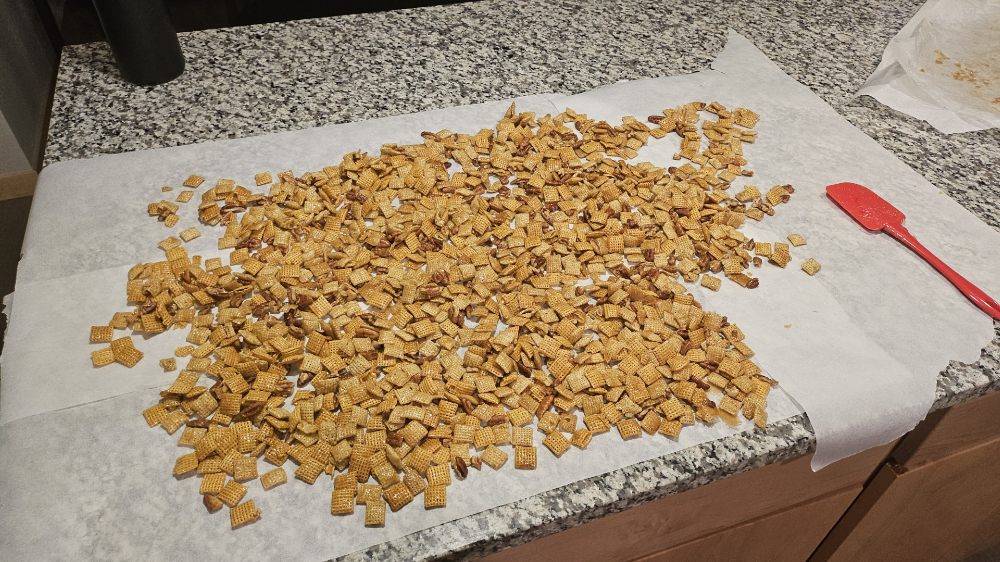

My Favorite Recipe
Crispex Toffee Treat
Ingredients
- 12 oz. box of Crispex
- 1 cup of butter
- 1/2 cup of dark Karo syrup
- 2 cups chopped pecans
- 1 cup brown sugar
Instructions
- Preheat your oven to 250 degrees fahrenheit.
- Bring the butter, brown suger and dark karo syrup to a boil.
- In a 9x13 pan mix cereal and pecans.
- Pour sugar mixture over cereal in pan and mix.
- Bake at 250 for an hour stirring every 15 mins.
- Pour on wax paper to cool.
- Once cool break it up and store in air tight containers.